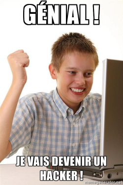

Sécurité Web

Par Alexandre Gravel-Raymond
@alexgrweb, Développeur web depuis 1982
Pourquoi ?
- Sécurité des utilisateurs
- Confidentialité des données
- Intégrité des données
- Image de l'organisation
OWASP
Open Web Application Security Project est une organisation à but non lucratif fournissant des recommandations, outils et articles de référence sur la sécurité des applications web.
Projet Top 10
Liste les 10 risques de sécurité web les plus critiques
Dernière version publiée en 2013 et toujours d'actualité
1. Injection
Source: xkcd
Injection SQL
Cas typique :
Code :$sql = "SELECT * FROM users
WHERE login = '".$_GET['login']."'
AND password = '".$_GET['password']."'";
$user = mysqli_query($sql);
Requête :GET /login.php?login=unicorn&password='+OR+'1'='1 HTTP/1.1
Résultat :SELECT * FROM users
WHERE login = 'unicorn'
AND password = '' OR '1'='1'
Comment se protéger ?
- Ne jamais faire confiance aux données provenant d'une source tiers (paramètres GET/POST, cookies, base de données, etc).
-
Toujours échapper les chaînes de caractères à insérer dans une requête ou une commande. Exemples :
MySQLi :
$login = mysqli_real_escape_string($_GET['login']);PDO :
$login = $connection->quote($_GET['login']);
- Utiliser des requêtes préparées :
$stmt = $dbh->prepare("INSERT INTO users (username, password) VALUES (?, ?)");
$stmt->bindParam(1, $username);
$stmt->bindParam(2, $password);
$stmt->execute();- Ne pas réinventer la roue :
// DON'T DO THIS
$login = str_replace("'", "\\'", $_GET['login']);Attention !
Des injections sont possibles à chaque moment où l'application utilise des données fournies par le client pour interagir avec un système tiers
- Commandes de l'OS (exec(), system(), etc.)
- Envoi de mails (injection d'entêtes)
- Appel à un webservice
- Code PHP avec eval() (╯°□°)╯︵ lɐʌǝ
- Etc.
Le nettoyage de l'input doit être approprié au contexte
2. Violation de gestion d’authentification et de session

Exemples
- Les mots de passe sont stockés ou envoyés en clair
- Les sessions durent trop longtemps ou éternellement (prendre en compte les utilisations sur des postes publics)
- Exposition ou vulnérabilité des IDs de session (ex: paramètre PHPSESSID dans l'URL)
- Identifiants ou cookies de sessions envoyés via HTTP
Défenses possibles
-
Le hachage MD5 est insuffisant pour les mots de passe, utiliser :
$hashed = password_hash($password, PASSWORD_DEFAULT); -
Activer le flag Secure sur les cookies de sessions :
session.cookie_secure = On
3. Cross-Site Scripting (XSS)

Exemple de faille XSS
Code :
Requête :GET /index.php?q="/><script>alert('Vive+le+Québec+Libre+!');</script> HTTP/1.1
Rendu :
Types
- Serveur / Client
- Réfléchi / Stocké
Risques
- Vol de session
- Defacement
- Propagation de virus
- ...
- Samy is my hero!
Comment se protéger ?
- Ne jamais faire confiance aux données provenant d'une source tiers (paramètres GET/POST, cookies, base de données, etc).
-
Toujours échapper les chaînes de caractères à insérer dans dans une page HTML.
Utiliser les méthodes d'échappement fournies par le moteur de template utilisé.
- Ne pas réinventer la roue :
// DON'T DO THIS $q = str_replace('"', '\\"', $_GET['q']); - Toujours déclarer l'encodage de la page HTML pour éviter des contournement par modification de l'encodage (UTF-7)
-
Utiliser le flag HTTPOnly sur les cookies de session :
session.cookie_httponly = On - Envisager l'utilisation de Content Security Policy (CSP) permettant notamment de limiter l'origine d'exécution de scripts JS.
Attention !
Il faut toujours prendre en compte le contexte dans lequel la chaîne sera affichée.
- Dans du code JavaScript / JSON :
json_encode() - Dans du code CSS
- Dans un URL :
url_encode() - Dans un commentaire HTML
4. Références directes non sécurisées à un objet

Exemple d'attaque
URL de téléchargement :http://www.example.net/download_file.php?id=665
Intuitivement, on incrémente !
Solutions
- Implémenter des références indirecte aux objets auxquels l'utilisateur a réellement accès.
Télécharger mon 6e fichier :
http://www.example.net/download_file.php?n=6 - Vérifier les droits à chaque tentative d'accès à une ressource protégée.
5. Mauvaise configuration sécurité

Quelques pistes
php.iniexpose_php = Off
display_errors = Off
disable_functions = system, exec, shell_exec, passthru, popen, proc_open, eval
disable_functions = phpinfo, show_source
... et plein d'autres choses :
PHP Configuration Cheat Sheet
Base de prod accessible publiquement sans mot de passe ?
✓ Merci MongoDB !
6. Exposition de données sensibles
Exemples de failles
- Données stockées en clair
- Données transmises via HTTP
Défenses possible
- Chiffrer les données sensibles lors du stockage et du transport des données
-
Utiliser HTTPS (plus d'excuse avec Let's Encrypt) !
-
Forcer le protocole HTTPS avec HSTS :
header('Strict-Transport-Security: max-age=60000; includeSubDomains');
7. Manque de contrôle d’accès au niveau fonctionnel

8. Cross-Site Request Forgery (CSRF)

Exemple d'attaque
URL d'envoi d'email massif :http://www.example.com/admin/massive_send.php?title=Code+Promo&body=Bonjour+PRENOM,[...]
Dans une page non-liée, hébergée par l'attaquant :<img src="http://www.example.com/admin/massive_send.php?title=Buy+Viagra&body=MWAHAHA"/>
Effet : Un utilisateur, ayant des droits suffisants, accédant par inadvertance à cette page verra l'action malicieuse déclenchée en son nom sur le site web vulnérable.
Clickjacking
Exemple
Êtes-vous pour la paix dans le monde ?
OuiNon
Que s'est-t-il passé ?
Êtes-vous pour la paix dans le monde ?
OuiNon
Explications
#container { position: relative; width: 500px; } #honey { position: absolute; left: 120px; top: 260px; } #iframe { opacity: 0; height: 375px; width: 500px; }Êtes-vous pour la paix dans le monde ?
Oui
Non
Défenses possibles
- Générer un token d'utilisation unique dans un champ caché des formulaires (Anti-CSRF token) et le vérifier côté serveur
- Demander à l'utilisateur de confirmer son action (saisir son mot de passe, CAPTCHA, etc.)
- Pour les URLs destinées à être appelées en AJAX, vérifier la présence du header HTTP :
X-Requested-With: XMLHttpRequest - Empêcher le chargement du site dans une iframe :
header('X-Frame-Options: DENY');
Attention !
- Il est nécessaire, mais non suffisant, d'utiliser une méthode HTTP appropriée (POST et non GET) pour les actions sensibles
- Cette attaque est fréquemment combinée à une attaque XSS sur le même site ou sur un site tiers
- La vérification de l'entête HTTP Referer n'est pas suffisante
9. Utilisation de composants avec des vulnérabilités connues
Comment réduire le risque
- Faire de la veille sécurité... c'est difficile.
- Vérifier régulièrement son fichier composer.lock avec le Security Advisories Checker de SensioLabs.
10. Redirections et renvois non validés

Exemple d'attaque
Code de redirection :header('Location: '.$_GET['url']);
URL envoyé à un utilisateur innocent :http://www.example.com/redirect.php?url=http://www.example-phishing.com
Effet : L'image de marque du site (son URL) est détournée afin de gagner la confiance de l'utilisateur.
Comment bloquer l'attaque
- Ne pas inclure l'URL de redirection dans les paramètres GET ou POST
- Si c'est nécessaire de le faire, toujours vérifier la validité de l'URL avant de l'envoyer à l'utilisateur (ex: présence du nom de domaine dans une whitelist)
Prévenir (certains) risques
Utiliser un firewall applicatif
modSecurityFaire un audit
Inspecter le code avec ses yeux
Porter une attention particulière à :
- Tous les fichiers, PHP ou non, accessibles directement
- Le système d'authentification / gestion de sessions
- Les paramètres manipulables par l'utilisateur : GET, POST, Cookies, entêtes HTTP (Host, etc.)
- @FIXME / @TODO
- La configuration du serveur et de PHP en production
-
Tout système d'upload de fichier :
- Le type de contenu est-il correctement vérifié ? (ne pas se baser sur l'extension)
- Le répertoire d'upload est-il accessible publiquement ?
- Est-il possible de contourner le répertoire d'upload ?
- La lecture de fichier dont le chemin dépend d'un paramètre utilisateur
Scanner le code source ?
Oui, mais...
RIPS ?
Utiliser un scanner web
- Burp Suite (scanner passif/actif, proxy, etc.) - Propriétaire, €€€
- Arachni (scanner) - "Code source public", gratuit
- w3af (scanner) - Logiciel libre
- Observatory by Mozilla (Analyse de configuration HTTP)
- sqlmap (Tests d'injection SQL) - Logiciel libre
S'entraîner
Application vulnérables
Défis
Et pour finir...
Attention à l'Internet des Objets...
et au Washergeddon !